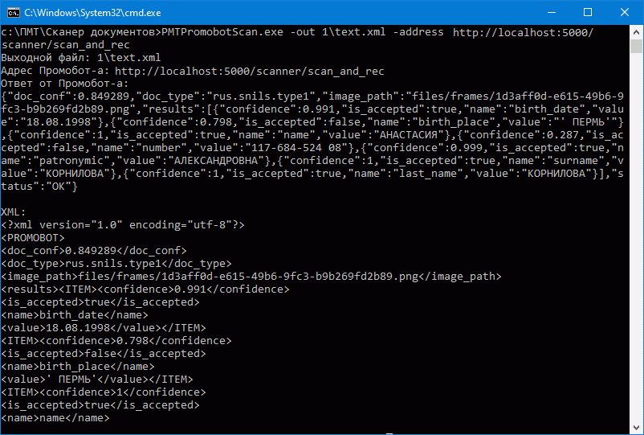

Интеграция с устройством Сканер Промобот (Promobot)
1. Назначение утилиты PMTPromobotScan
Утилита PMTPromobotScan обеспечивает автоматизированное взаимодействие медицинской информационной системы (далее – МИС) МЕДИАЛОГ с внешним с устройством "Promobot Scanner". Устройство "Promobot Scanner" предназначено для сканирования документов, распознавания реквизитов и передачи данных (без передачи непосредственно изображений) в структурированном виде. Переданные устройством данные могут использоваться в МИС МЕДИАЛОГ для автоматического заполнения необходимых полей. К примеру, можно настроить заполнение полей на Титульном листе ЭМК пациента данными со скана Паспорта, Страхового свидетельства (СНИЛС), Полиса ОМС и других документов.
Настройка устройства "Promobot Scanner" на рабочем месте
Инструкция по установке устройства на рабочем месте пользователя и описание его взаимодействия с информационной системой описаны в документе "Promobot.Инструкция по интеграции.pdf".
2. Требования к версии МИС МЕДИАЛОГ
Утилита PMTPromobotScan для взаимодействия с устройством "Promobot Scanner" поддерживается МИС МЕДИАЛОГ начиная с версии 8.10.4.
3. Алгоритм работы утилиты
Системная утилита PMTPromobotScan находится в каталоге поставки МИС МЕДИАЛОГ и взаимодействует с устройством "Promobot Scanner" по следующему алгоритму: * выполняет REST-запрос к web-сервису распознавания сканера; * ожидает ответ web-сервиса в виде JSON-массива; * если обработка выполнена успешно, то полученный в ответе JSON утилита преобразует в файл XML формата:
<document>
<type>$doc_type</type>
<results>
<$name>$value</$name>
...
</results>
</document>
- полученный XML-файл сохраняется папке указанной в параметрах запуска утилиты. Обработка XML-файла производится на стороне МИС после выполнения основного задания;
- в случае неуспешной обработки утилита возвращает пустой документ, в окне консоли будет выдано сообщение: "Не удалось получить ответ от Промобот-а. Статус: 500, ошибка: Неизвестная ошибка".
4. Порядок использования утилиты
Для использования утилиты взаимодействия с устройством она должна быть установлена на рабочем месте, где будет осуществляться сканирование и распознавание документов. Утилиту рекомендуется разместить в каталоге клиентского приложения МИС МЕДИАЛОГ. При первом запуске утилиты необходимо активировать лицензию на неё. Утилита является консольной и не имеет собственного интерфейса. Запуск утилиты может осуществляться из командной строки, с помощью ярлыка на рабочем столе пользователя и из МИС МЕДИАЛОГ c помощью кнопки Команда Windows, размещенной на какой-либо экранной форме. Для удобства работы пользователей и корректного взаимодействия утилиты с МИС МЕДИАЛОГ рекомендуется использовать запуск утилиты c помощью кнопки Команда Windows.
Запуск утилиты из командной строки
Пример обращения к утилите PMTPromobotScan в командной строке показан на рис.1.
Рисунок 1. Запуск утилиты из командной строки
См. в разделе Пример настройки кнопки Windows для вызова утилиты
При вызове утилиты необходимо задать следующие параметры:
* ключ -out содержит путь к папке, в которую выкладывается XML-файл с данными сканирования (папка для файла должна быть создана заранее),
* ключ -address содержит путь к web-серверу, на котором расположен сервис распознавания сканера.
Если перечисленные параметры не указаны, при запуске утилиты будет выведена подсказка вида:
PMTPromobotScan.exe -out text.xml -address http://localhost:5000/scanner/scan_and_rec
Во время работы утилиты процесс создания XML-файла (расшифровка JSON-массива) отображается в консольном окне (рис. 2). После обработки JSON-массива создается XML-файл (имя файла и папка, куда файл будет выложен, задаются в параметре -out). После успешного создания XML-файла утилита заканчивает свою работу.

При неуспешном выполнении запроса есть возможность посмотреть код ошибки. Для этого в консоли необходимо выполнить команду echo %errorlevel% (рис.3)
Коды ошибок:
0 – ошибки нет,
1 – не удается удалить / перезаписать XML-файл,
2 – не удалось получить ответ от Сканера Промобота (недоступность web-сервиса),
3 – ошибка парсинга JSON-массива.
Запуск утилиты с помощью ярлыка на рабочем столе
Для запуска утилиты с рабочего стола пользователя, необходимо создать ярлык для исполняемого файла утилиты PMTPromobotScan.exe. Затем, в настройках ярлыка в поле Объект (рис. 4) задать команду обращения к утилите, аналогичную той, что используется в командной строке на рис.1.
5. Пример настройки кнопки Windows для вызова утилиты
Для вызова утилиты непосредственно из МИС МЕДИАЛОГ необходимо разместить кнопку типа Команда Windows на экранной форме, связанной с регистрацией документов, удостоверяющих личность (например, на экранной форме Административные данные Титульного листа пациента).
В настройках кнопки на вкладке Параметры запуска (рис. 5) необходимо в поле Заголовок ввести название кнопки, в поле Выполнить файл – путь к исполняемому файлу, обязательно установить флажок Ожидать выполнение команды. Если утилита была размещена в каталоге клиентского приложения, путь к исполняемому файлу рекомендуется указать в формате [WorkingDir]\PMTPromobotScan\PMTPromobotScan.exe.

Если полученные в результате сканирования и распознавания данные должны быть загружены в базу данных необходимо выполнить соответствующие настройки на вкладке Параметры импорта данных (рис. 6).
В поле Импортируемый файл необходимо указать файл, в который сохраняются результаты сканирования (путь из параметра ключа -out). Файл рекомендуется сохранять в каталоге утилиты, и если утилита была размещена в каталоге клиентского приложения, путь для сохранения файла рекомендуется указать в формате [WorkingDir]\PMTPromobotScan\Result.xml.
Далеее необходимо задать пользовательские функции, которые будут выполнятся до импорта файла и после него.
В нижней части вкладки выбрать таблицу (таблицы), в которую должны вносится распознанные данные, настроить связь полей таблицы и XML-файла.
Подробнее о настройке кнопки типа Команда Windows см. раздел "Кнопки управления на экранных формах" руководства пользователя "Модуль ЭМК" (EMR.pdf).